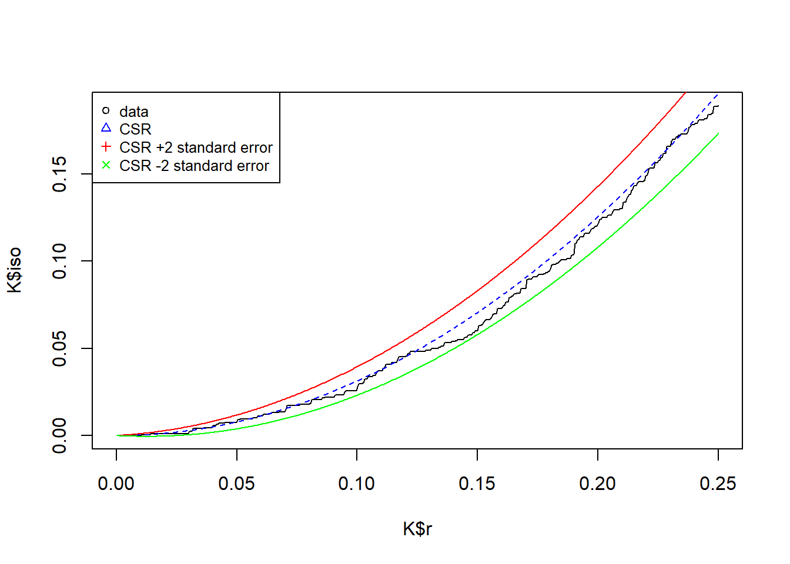
Estimating the K-function
Recall the definition of the K-function: \[ K(t) = \frac{E[N_0(t)]}{\lambda} \] In small samples, estimation of \(K(t)\) would be more straightforward than that of \(\lambda_2(t)\) or \(\rho(t)\). While \(K(t)\) and \(\lambda_2(t)\) are both related to the distribution of inter-event distances, \(K(t)\) can be estimated without deciding how much to smooth the empirical distribution.
Sometimes we may use random thinning (i.e. retaining or discarding each event using mutually independent Bernoulli trials) to reduce our sample size, and \(K(t)\) is invariant under this process. This is due to the ratio of \(E[N_0(t)]\) and \(\lambda\) being unchanged.
An obvious estimator for \(\lambda\) is \(\hat{\lambda} = n/|A|\), the number of observed events divided by the area. As for \(E[N_0(t)]\), the expected number of further events within distance \(t\) of an arbitrary event, we can use the following estimator: \[ \tilde{E}(t) = \frac{1}{n} \displaystyle \sum_{i=1}^n \sum_{j \ne i} I(r_{ij} \leq t) \] where \(I\) is the indicator function and \(r_{ij} = ||x_i - x_j||\). However, this estimator is negatively biased due to edge-effects, where events outside of the observed region may interact with those within the region. In this case, some events that lie within distance \(t\) may be unobserved as they lie outside the region.
Edge-correction
We will now explore the method (Ripley 1976) to correct this bias. Let \(w(x,r)\) be the proportion of the circumference of the circle, with centre \(x\) and radius \(r\), that lies in the observed region \(A\). Define \(w_{ij} = w(x_i, ||x_i-x_j||)\), i.e. for a circle centred at \(x_i\) with \(x_j\) lying on its circumference, the proportion of the circumference inside \(A\). For any stationary isotropic process, \(w_{ij}\) is the probability that an event is observed, given it is distance \(r_{ij}=||x_i-x_j||\) away from event \(x_i\). In general \(w_{ij}\ne w_{ji}\).
An unbiased estimator for \(E[N_0(t)]\) is thus: \[ \hat{E}(t)=\frac{1}{n}\displaystyle \sum_{i=1}^n\sum_{j \ne i}\frac{1}{w_{ij}}I(r_{ij} \leq t) \] Replacing the unknown intensity \(\lambda\) by \((n-1)/|A|\), we obtain an estimator for \(K(t)\): \[ \hat{K}(t)= \frac{|A|}{n(n-1)} \displaystyle \sum_{i=1}^n\sum_{j \ne i}\frac{1}{w_{ij}}I(r_{ij} \leq t) \] This is the form that Diggle used in the book. Ripley’s estimator used \(n^2\) instead of \(n(n-1)\) in the denominator, but for large \(n\), the difference is negligible.
The variance of \(\hat{K}(t)\) can be used in a similar way to the simulation envelopes we used in previous CSR tests. There are several ways to estimate the sample variance, proposed by various people, but in particular, assuming \(A\) is a rectangular region, Lotwick and Silverman’s result is (Lotwick and Silverman 1982): \[ v_{LS}(t) = \frac{1}{n(n-1)}\{2b(t)-a_1(t) + (n-2)a_2(t)\} \] where, denoting the perimeter of \(A\) as \(P\), \[ \begin{align} b(t) &= \frac{\pi t^2}{|A|} (1 - \frac{\pi t^2}{|A|}) + \frac{1}{|A|^2} (1.0716Pt^2 + 2.2375t^4), \\ a_1(t) &= \frac{1}{|A|^2}(0.21Pt^3 + 1.3t^4), \\ a_2(t) &= \frac{1}{|A|^3}(0.24Pt^5 + 2.62t^6) \\ \end{align} \] The formulae have been modified by Diggle to account for the modified formula of \(\hat{K}(t)\). They are valid for \(t\) at most the length of the shorter side of \(A\).
Estimation using R
RStudio has the built-in function Kest which estimates the K function and the variance, based on several edge-correction methods. Here we will use Ripley’s isotropic correction and Lotwick and Silverman’s variance under homogeneity, as they were discussed above. The following graphs will plot \(\hat{K}(t)\) of the data, the theoretical \(K(t)\) from a homogeneous Poisson process, and the envelopes that are \(K(t)\) plus or minus 2 standard errors.
Japanese black pines
We see that \(\hat{K}(t)\) lies close to \(K(t)\), and remains inside the envelopes. CSR is evident, which agrees with our previous tests of CSR.
Redwood
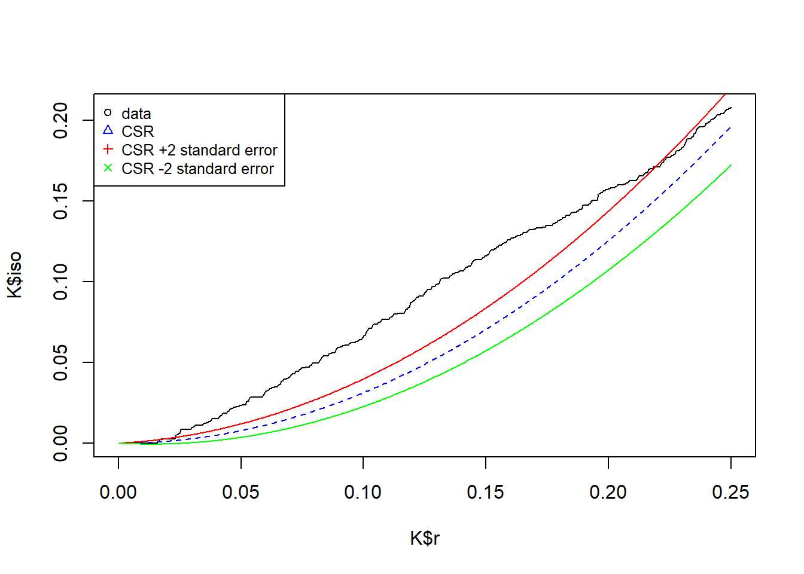
With the majority proportion of \(\hat{K}(t)\) lying above 2 standard errors of \(K(t)\), it is clear that the data is aggregated, since there are more further events expected around an arbitrary event compared to a homogeneous Poisson process.
Cells
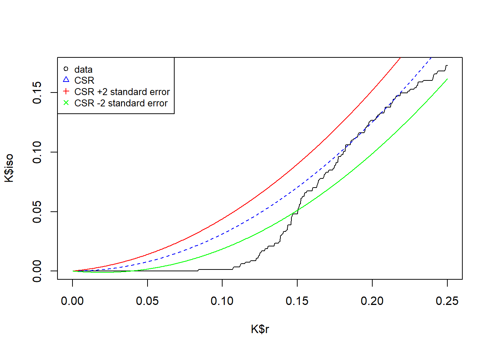
For distances under 0.15, the expected number of further events around an arbitrary event is less than under CSR. This is a typical behaviour of regular patterns, and this agrees with our previous tests of CSR.
Beilschmiedia pendula (Lauraceae)
Since the built-in function is not suitable for handling patterns with over 3000 data points, I am only performing the test on the top left corner of the region, which is a \(100 \times 100\) square containing 136 points:
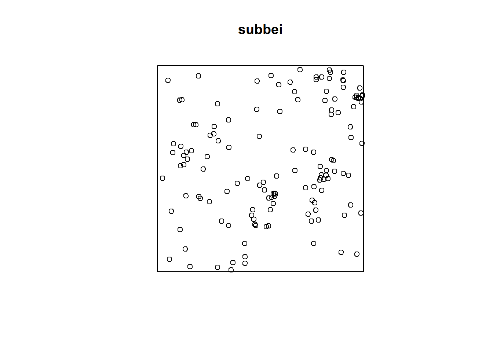
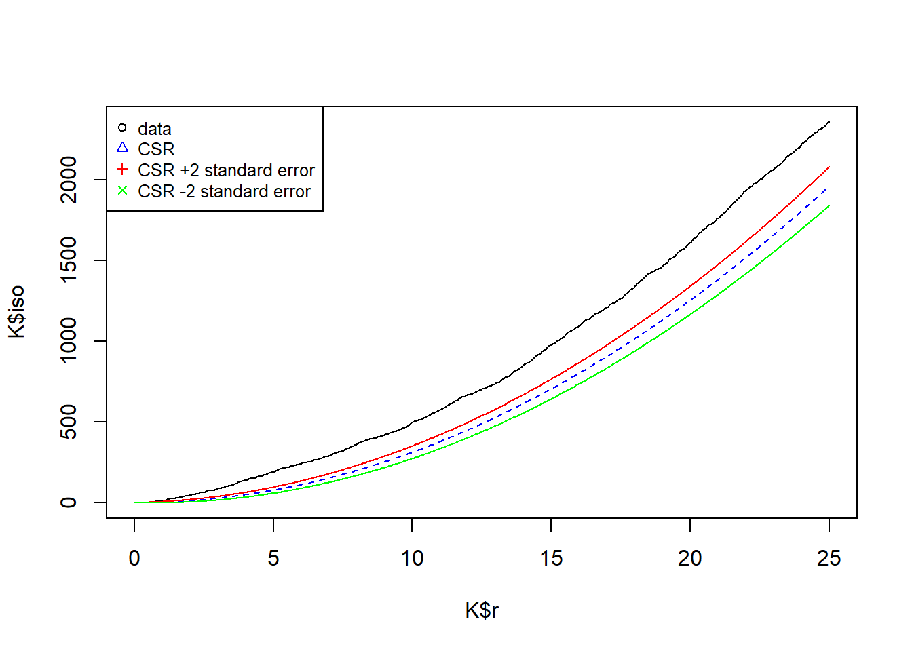
The clear excess of expected further events provides strong evidence against CSR. We have established from previous CSR tests that the pattern of all 3604 trees are aggregated just like the redwood saplings, and this subset behaves the same.
Multivariate process
The estimation of \(K_{12}(t)\) for a bivariate pattern follows the same idea as \(K(t)\), but the distances measured would be between pairs of events of different types. For the \(i\)th type 1 event and the \(j\)th type 2 event, let \(u_{ij}\) be the distance between them, and \(w_{ij}\) be defined based on them. The numbers of type 1 and 2 events are \(n_1\) and \(n_2\) respectively. Then a weighted average of estimated \(\hat{K}_{12}(t)\) would be:
\[ \hat{K}_{12}(t) = \frac{|A|}{n_1 n_2}\displaystyle \sum_{i=1}^{n_1} \sum_{j=1}^{n_2} w_{ij}^* I(u_{ij} \le t) \] where \[ w_{ij}^* = \frac{n_1 w_{ij} + n_2 w_{ji}}{n_1 + n_2} \] Lotwick and Silverman (Lotwick and Silverman 1982) also gave a formula for the variance of the bivariate case. For \(b(t)\), \(a_1(t)\) and \(a_2(t)\) as defined above, alongside \(c=n_2/(n_1+n_2)\), for 2 independent homogeneous Poisson processes, \[ Var\{\hat{K}_{12}(t)\} = \frac{|A|^2}{n_1 n_2}[b(t) - 2c(1-c)a_1(t) + \{(n_1-1)c^2 + (n_2-1)(1-c)^2\}a_2(t)] \]
From the Barro Colorado Island dataset (H. Condit R. and Foster 2005; R. Condit 1998; Hubbell and Lao 1999), I have obtained 3 species of trees: Acalypha diversifolia, Cecropia insignis and Cupania seemannii. Using the Kmulti built-in function, \(\hat{K}_{12}(t)\) between each pair of these species can be estimated.
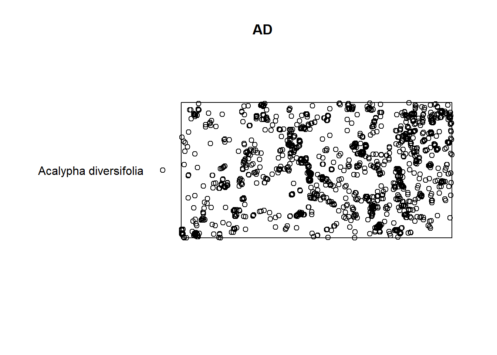
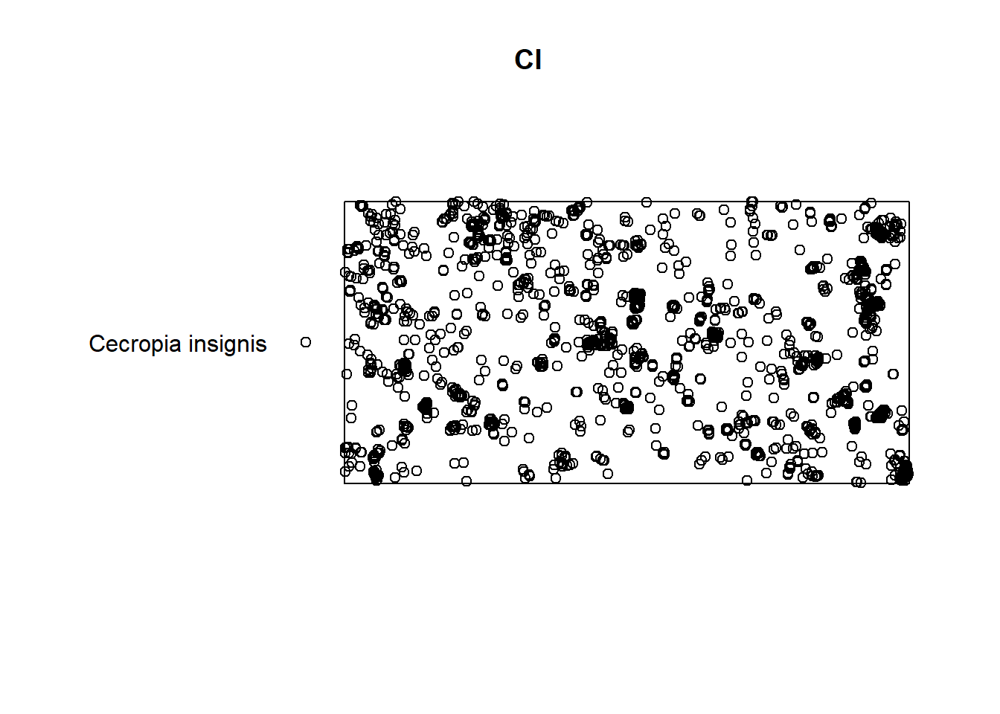
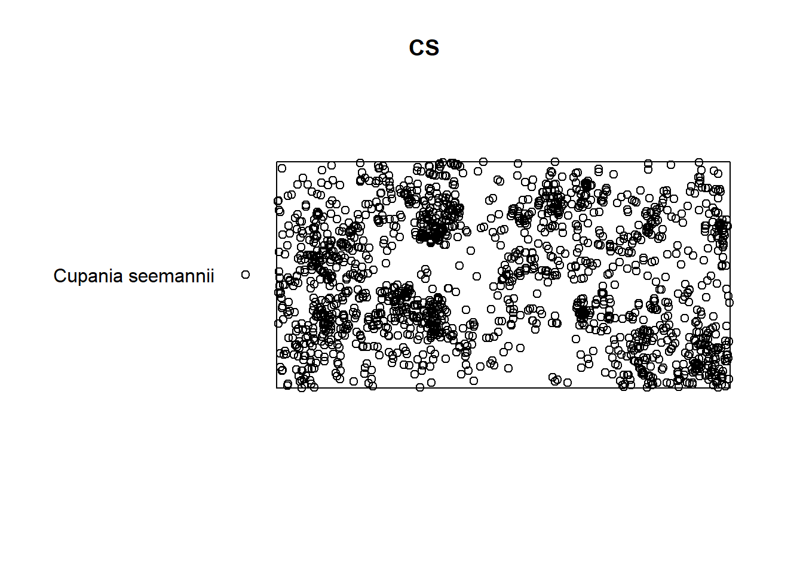
Acalypha diversifolia & Cecropia insignis
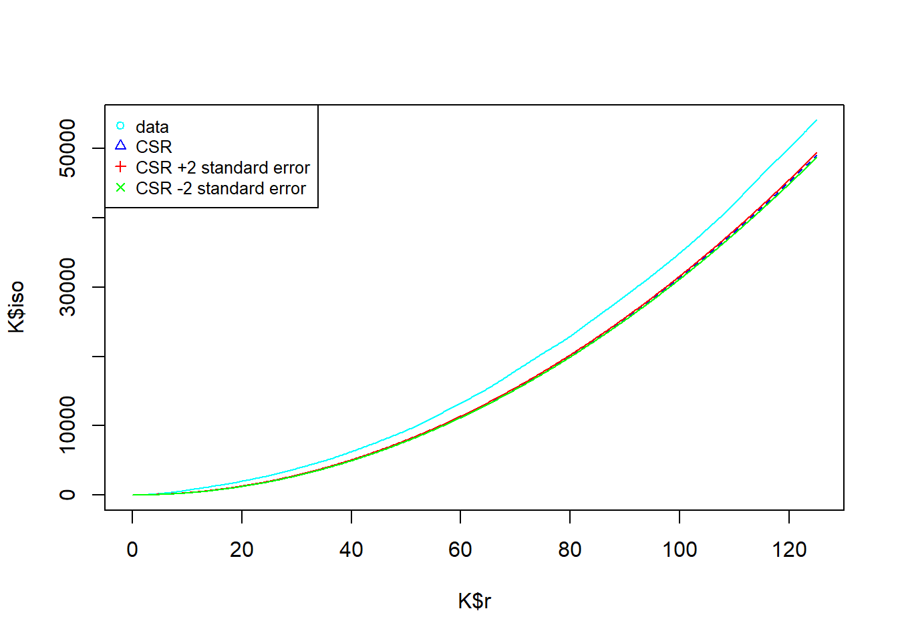
Cecropia insignis & Cupania seemannii
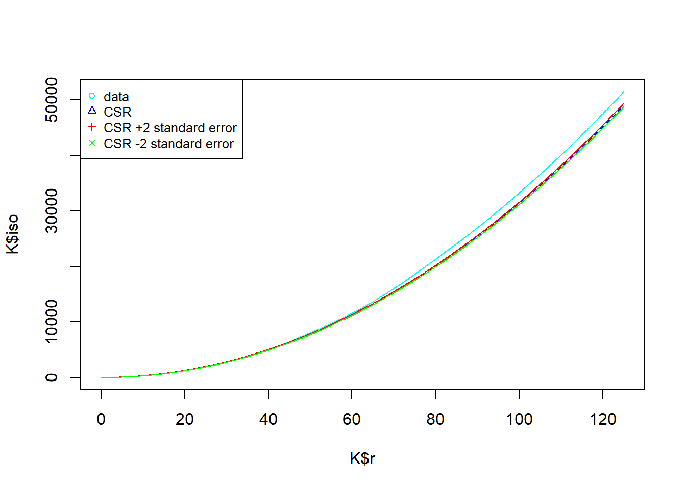
Cupania seemannii & Acalypha diversifolia
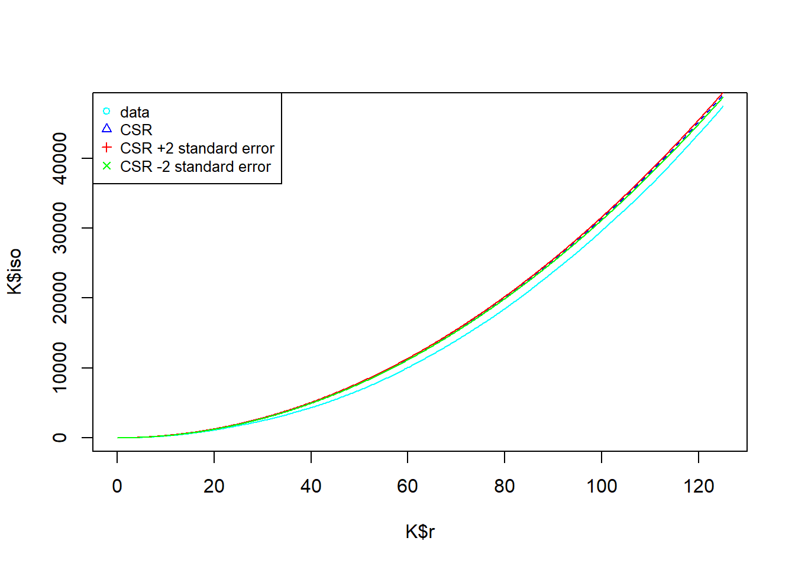
The first 2 pairs of species exhibit strong aggregation, while the third pair exhibits regularity.
References
Condit, Hubbell, R., and R. B. Foster. 2005. “Barro Colorado Forest Census Plot Data.” http://ctfs.si.edu/webatlas/datasets/bci.
Condit, R. 1998. Tropical Forest Census Plots. Springer-Verlag, Berlin; R.G. Landes Company, Georgetown, Texas.
(ForestGEO), Forest Global Earth Observatory. n.d. “Barro Colorado Island.” https://www.flickr.com/photos/ctfs.
Hubbell, R. B. Foster, S. P., and S. Loo de Lao. 1999. “Light Gap Disturbances, Recruitment Limitation, and Tree Diversity in a Neotropical Forest.” Science 283: 554–57. https://doi.org/10.1126/science.283.5401.554.
Lotwick, H. W., and B. W. Silverman. 1982. “Methods for Analysing Spatial Processes of Several Types of Points.” Journal of the Royal Statistical Society: Series B (Methodological) 44: 406–13. https://doi.org/10.1111/j.2517-6161.1982.tb01221.x.
Ripley, B. D. 1976. “The Second-Order Analysis of Stationary Point Processes.” Journal of Applied Probability 13: 255–66. https://doi.org/10.2307/3212829.